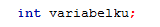
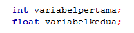
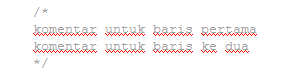

Struktur Bahasa C
14 Agustus 2017, posted by M. Fadli Zein
|
Struktur Bahasa C 14 Agustus 2017, posted by M. Fadli Zein |
Pada Pembahasan kali ini, kita akan belajar salah satu bahasa pemograman yaitu C Programing langguage atau bahasa indonesia-nya Bahasa Pemograman C. tapi jika kamu ingin benar-benar paham dengan bahasa C ini, kamu harus punya niat untuk belajar serius, dan pantang menyerah, kenapa harus belajar bahasa C? karna dengan belajar bahasa C, kamu bisa dengan cepat mengerti bahasa Pemograman Lainnya. cek Daftar Bahasa Pemograman disini dengan paham bahasa C, kamu hanya tinggal menyesuaikan coding-coding pada bahasa lainnya, untuk struktur dan logika nya sama.
Sebelum kita belajar pemograman dengan Bahasa C, kita akan mengenal dulu STRUKTUR dari bahasa C, untuk itu mari kita lihat Struktur Dasar dari Pemograman dengan Bahasa C.
Ada beberapa komponen pentinga dalam struktur program Bahasa C, yaitu :
Berikut adalah Contoh Kode Program C , pada contoh berikut telah saya berikan keterangan dari komponen-komponen dasar yang telah saya sebutkan. silahkan lihat telebih dahulu Kode Programnya.
Usahakan Agar kamu paham dulu dengan Kode-kode diatas, saya saran kan agar kamu mengetik lansung Kode-Kode diatas, dan kamu coba menganti angka pada kode-kode diatas, agar kamu paham fungsi masing-masing dari komponen diatas.
Fungsi main() adalah list to do, list to do adalah apa apa saja yang akan di kerjakan oleh PC dan Laptop. jadi apa itu main()? main() adalah sekumpulan perinath yang akan di kerjaka atau di proses oleh komputer untuk ditampilkan, jadi saat kurung kurawal main() dibuka sampai kurung kurawal nya ditutup, itu lah hasil atau apa-apa saja yang akan di tampilkan ke komputer kamu.
berdasarkan conloh di atas , isi dari fungsi main() pada program SegiEmpat diatas adalah:
Variable adalah sebuah tempat untuk menyimpan data berupa angka, huruf, kata, dan lain-lain. pada contoh diatas, kita memberikan perintah agar nilai 10 disimpan ke Variable Panjang dan nilai 5 disimpan ke Variable Lebar.
Deklarasi Variable adalah sebuahb perintah agar komputer menyediakan variable yang akan kita pakai. pada contoh diatas kita kita memerintahkan komputer untuk mnydiakan variable dengan nama panjang, lebar , dan luas. variabel tersebut akan kita pakai untuk menyimpan data yang beruba bilangan bulat(integer). untuk mendeklarasikan tipe bilangan bulat, kita akan memakai tipeint.
ada beberapa tipe data dalam bahasa C, tapi kita akan membahas 2 buah tipe data dulu yaitu:
Untuk mendeklarasikan sebuah variable , dalam Bahasa C, kita perlu menuliskan tipe-nya dan namavariabel-nya:
Mendeklarasikan 1 Buah Variabel
Mendeklarasikan Lebih Dari 1 Buah Variabel
perlu teman-teman perhatikan, untuk penulisan nama variable , kita tidak bisa menulis nya sembarangan, ada beberapa kata yang tidak bsa di pakai sebagai nama variabel, contoh nya seperti :
Perintah atau statement digunakan untuk memerintahkan komputer untuk melakukan sesuatu. penjelasan yang ada di program diatas akan kita bahas disini, jangan bingung gimana cara pemakaiannya, yang penting kamu paham dulu dengan fungsi-fungsi perintah nya dulu, oke?
Dalam bahasa C, kita memakai banyak statement, seperti statement printf(""); , scanf(""); , dan lain-lain.dan statement itu tidak lansung ada didalam bahasa c, dan bagaimana cara nya agar statement itu tersedia dalam kode-kode kita?... kita perlu memberi tau komputer kita untuk memakai library yang menyediakan statement printf(""); , scanf(""); . dan statement itu, ada disalam library yang bernama, "stdio.h" . bagaimana cara kita memanggil "stdio.h" ? kita bisa manggil nya di awal kode kita, dengan penulisan seperti ini :
Ada beberapa library file lainnya yang bisa kita pakai dalam bahasa C, yaitu:
komentar dalam bahasa c adalah sebuah catatan yang kita ketikan dalam kode-kode kita tapi tidak akan di eksekusi oleh komputer. komentar ini biasa nya di pakai untuk memberi kejelasan atau penjelasan pada kode-kode kita untuk di pahami user lainnya, dan juga sebagai catatan bagi pembuat kode-kode dalam program, agar mudah mengingat fungsi dari kode-kode yang dibuat tersebut. berikut adalah contoh dari penulisan komentardalam bahasa C.
kurung kurawal berfungsi untuk memberi tau bahwa perintah-peritah di dalamnya merupakan satu kesatuan. singkatnya, kurung kurawal kita pakai untuk membuat sekumpulan perintah dalam satu blok.
penjelasan mengenai Struktur Bahasa C, saya akhiri disini, semoga artikel ini bermamfaat .
 |